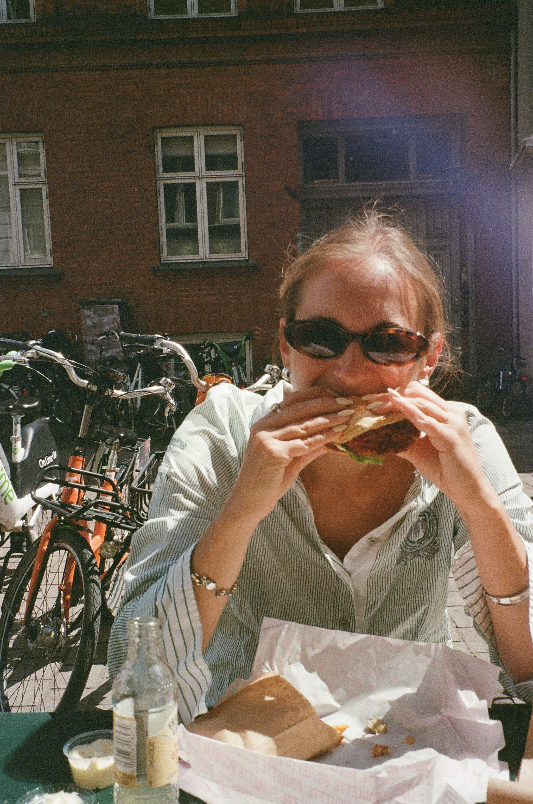
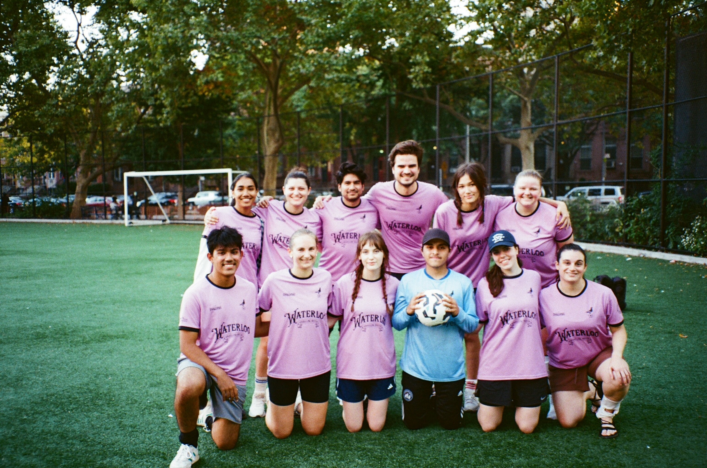

Let's add context.
Hi, I’m Hannah Farnham, a creative based in New York City, originally from the North Shore of Massachusetts. I combine design, art, and technology to craft thoughtful experiences across mediums.
Whether I'm painting, prototyping, coding, or brainstorming, I love the feeling of chasing an idea until it works. I’m always excited to find new ways to expand my creative toolkit.
I’m not too precious about first drafts; I’m always ready to rethink, rework, or rebuild if it means getting somewhere better. I value process over perfection; approaching every project with curiosity, adaptability, and an openness to rethinking things until they truly work.
I enjoy running, biking, hiking, traveling, eating, painting, knitting, cooking, baking, playing soccer, gardening, good beer, & a homemade halloween costume.


